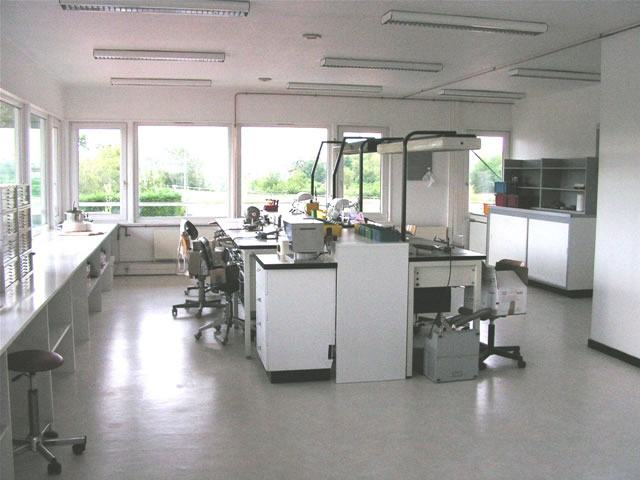
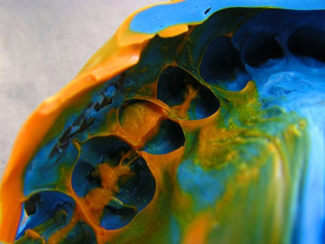
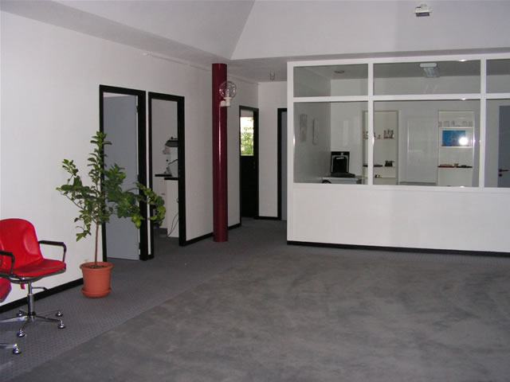
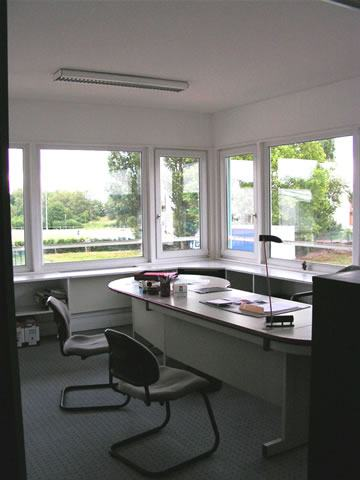
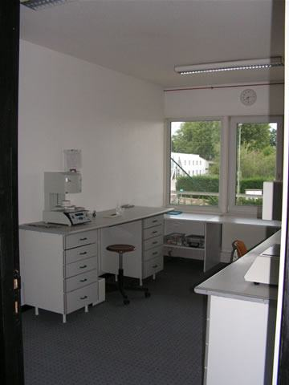
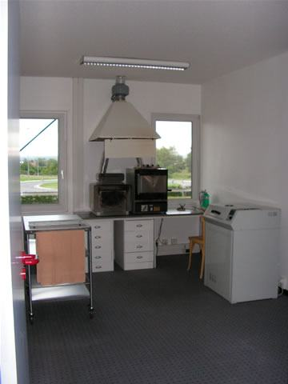
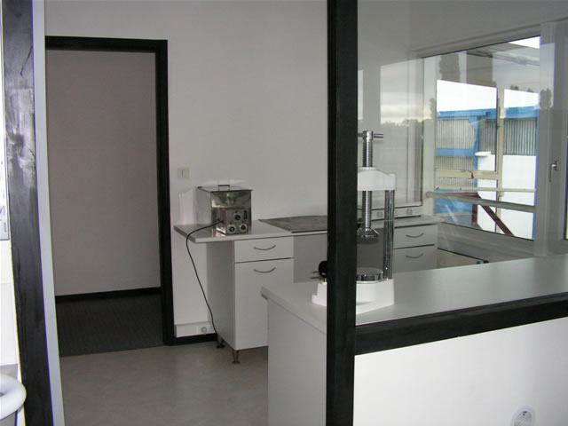
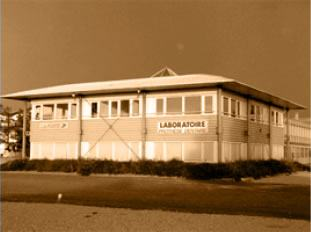

Riorges · Loire · depuis 1989
L'orfèvrerie dentaire, de l'empreinte à la réalisation
Le Laboratoire BIGNON est un laboratoire dentaire spécialisé dans les prothèses dentaires et dirigé par Stéphanie Bignon. Résine, céramique, métal et cire — six prothésistes diplômés, 265 m² de locaux, et chaque empreinte coulée avec un plâtre choisi selon sa dureté.
- 1989Création du laboratoire
- 2005Repris par Stéphanie Bignon
- 6Prothésistes diplômés
- 265 m²De locaux à La Villette
Les mots pour le dire
Le vocabulaire du laboratoire, en images
Trente termes du métier, cent quarante-sept photographies prises au laboratoire. Cherchez un mot, ou parcourez par famille de travaux.
Aucun terme ne correspond à cette recherche.
Le classement par famille est une proposition, à valider ou à réorganiser selon votre façon de présenter votre travail. Toutes les photographies proviennent de votre site actuel.
Le travail
Résine, céramique, métal et cire
Les stellites et les appareils résine représentent une grande partie de la production du laboratoire. La céramique In-Ceram a été mise en place à la suite d'un stage. L'orthodontie est également une spécialité de la maison.
- Chaque empreinte, son plâtreCoulée avec un plâtre spécifique, choisi selon sa dureté.
- Morphologie et fonctionTout travail réalisé respecte la morphologie et la fonction de chaque dent.
- Six prothésistes diplômésUne équipe formée à la résine, à la céramique, au métal et à la cire.
- Un accès pensé pour les coursiersLocaux de plain-pied en ZA La Villette, faciles à desservir.

Visite du labo
265 m² baignés de lumière
Des locaux choisis en 2006 pour être plus clairs, plus fonctionnels et faciles d'accès. Voici ce qu'on y trouve.





Présentation
Stéphanie Bignon
Née en 1970 à Roanne, elle a grandi dans un milieu artistique : un père tapissier décorateur, des oncles et une tante dessinateur, sculpteur et artiste peintre.
Elle fera son choix. Elle se tourne vers le méticuleux, la sculpture et le moulage de l'infiniment petit : l'orfèvrerie dentaire, la prothèse.
Apprentissage démarré à seize ans à Roanne, diplôme à dix-neuf. Un an à Bourgoin pour se perfectionner en prothèse fixe, puis le retour au pays. De 1990 à 2005, chez Monsieur Barras, elle se forme par des stages de pointe à la fabrication de crochets acétal, au montage en prothèse complète et à l'orthodontie.
En septembre 2005, elle reprend les parts d'un confrère disparu, associé dans le laboratoire Chataignier, créé en 1989. L'association prend fin en décembre 2006 : elle en devient seule propriétaire, et cherche entre-temps des locaux plus clairs, plus fonctionnels, plus faciles à desservir. Le déménagement se fait début août, pour ne pas pénaliser les clients par une fermeture.
- 1989Création du laboratoire.
- 1990 – 2005Formation continue : crochets acétal, prothèse complète, orthodontie.
- Septembre 2005Reprise des parts du laboratoire.
- Décembre 2006Seule propriétaire ; installation en ZA La Villette, 265 m².
Contact
Nous joindre
Pour un travail à confier, une question technique ou un passage de coursier.
-
Adresse53 rue Paul Forge — ZA La Villette
42153 Riorges -
Téléphone04 77 67 02 87
-
Courrielsteph.labo@orange.fr
Les horaires d'ouverture ne figurent pas sur le site actuel : ils restent à renseigner ici, ainsi que le créneau habituel de passage des coursiers.
